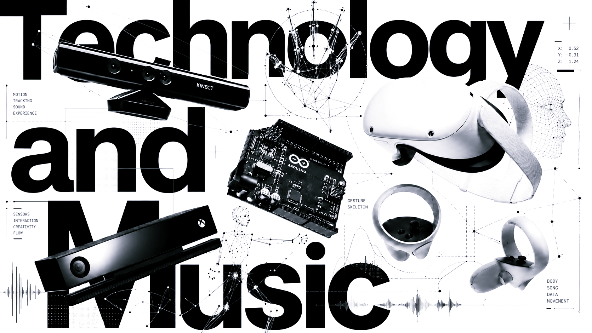

制作環境
普段使っているDAWや音楽制作環境をもとに、音作り、編集、ルーティング、外部ツールとの接続を整理します。

音楽プログラミング、DAW拡張、センサー、生成システム、AI音源、対話型AI、映像との連携を、 単なる操作方法ではなく、作品制作やサウンドデザインのための手段として扱います。
テクノロジーは、導入するだけでは作品になりません。 どの道具を選ぶか、どの結果を採用するか、音楽的にどう構成するかを、 制作プロセスの中で具体的に整理します。
はじめて触れる段階から、制作の中で自分なりに使い始める段階までを想定しています。 既存の作品やスケッチがある場合は、それをもとに必要な技術だけを選びます。

普段使っているDAWや音楽制作環境をもとに、音作り、編集、ルーティング、外部ツールとの接続を整理します。
音高、リズム、形式、確率、ルール、反復、変化を使い、作曲のための小さな仕組みを作ります。
生成された音源を聴き、使える部分、避けたい部分、編集すべき点、作品に接続できる可能性を整理します。
音と映像、動き、センサー、画面上の反応を結びつけ、作品の構造として使える形にします。
それぞれの技術を深く網羅する講座ではなく、作品制作に必要な範囲を選んで扱います。 目的がまだ曖昧な場合は、まず小さな試作から始めます。
パッチ、ルール、確率、反復、変化を使って、音や構造が動く仕組みを作ります。
DAWの中だけで完結しない制作、外部制御、拡張ツール、リアルタイム処理を整理します。
生成結果をそのまま使うのではなく、選定、編集、再構成、批評を通して作品に接続します。
プロンプト、文章生成、データの整理、追加学習の考え方を、音楽制作の補助線として扱います。
映像生成、画面上の動き、リアルタイム反応を、音楽作品やパフォーマンスに接続します。
大きなシステムを作る前に、短い実験、音のスケッチ、簡単な操作系から始めます。